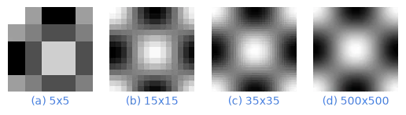

下面的案例是模拟“图片采样”的过程，生成了四个不同尺寸的灰度图像，每个图像都是通过余弦函数计算得到的黑白图案，并且将这些图案排列展示出来，来展示不同“分辨率”的图片的采样过程的影响。

import numpy as np
import matplotlib.pyplot as plt
def generate_image(width, height):
I = np.zeros((width, height))
for x in range(width):
for y in range(height):
I[x, y] = np.cos(x/width*2*np.pi) * np.cos(y/height*2*np.pi) * 255
return I
def plot(index,n):
plt.subplot(1,4,index+1)
plt.imshow(generate_image(n, n), cmap='gray')
plt.axis('off')
plt.text(0.5, -0.05, f"({chr(ord('a')+index)}) {n}x{n}", ha='center', va='top',
transform=plt.gca().transAxes, color='#4682E3')
for i,n in enumerate([5,15,35,500]):
plot(i,n)
plt.savefig('basic-sampling.png', transparent=True, bbox_inches='tight')
plt.show()